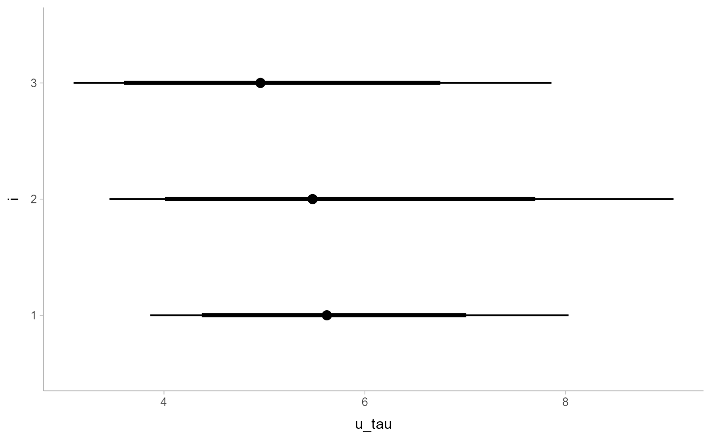
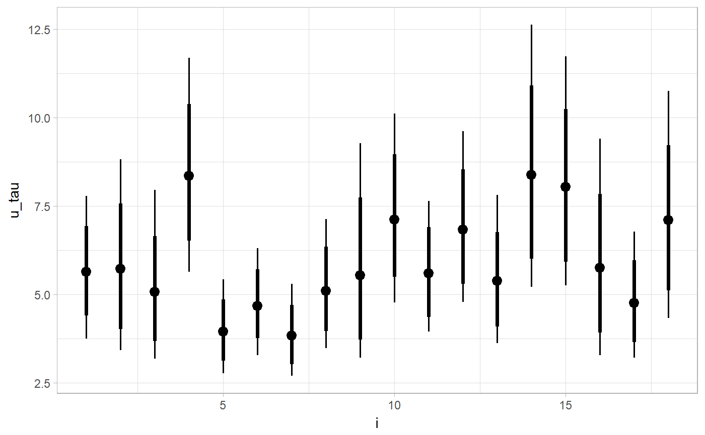

R/geom_pointinterval.R, R/geom_pointintervalh.R
geom_pointinterval.RdModified versions of geom_pointrange and geom_pointrangeh with default aesthetics
designed for use with output from point_interval.
geom_pointinterval(mapping = NULL, data = NULL, stat = "identity", position = "identity", ..., size_domain = c(1, 6), size_range = c(0.6, 1.4), fatten_point = 1.8, na.rm = FALSE, show.legend = FALSE, inherit.aes = TRUE) geom_pointintervalh(mapping = NULL, data = NULL, stat = "identity", position = "identity", ..., size_domain = c(1, 6), size_range = c(0.6, 1.4), fatten_point = 1.8, na.rm = FALSE, show.legend = FALSE, inherit.aes = TRUE)
| mapping | The aesthetic mapping, usually constructed with
|
|---|---|
| data | A layer specific dataset - only needed if you want to override the plot defaults. |
| stat | The statistical transformation to use on the data for this layer. |
| position | The position adjustment to use for overlapping points on this layer. |
| ... | Other arguments passed to |
| size_domain | The minimum and maximum of the values of the size aesthetic that will be translated into actual
sizes drawn according to |
| size_range | This geom scales the raw size aesthetic values, as they tend to be too thick when using the default
settings of |
| fatten_point | A multiplicative factor used to adjust the size of the point relative to the size of the thickest line. |
| na.rm | If |
| show.legend | Should this later be included in the legends? Default is |
| inherit.aes | If |
geom_pointinterval is a modified version of geom_pointrange, and geom_pointintervalh is
a modified version of geom_pointrangeh. These geoms set some default aesthetics equal
to the .lower, .upper, and .width columns generated by the point_interval family
of functions, making them often more convenient than vanilla geom_pointrange or
geom_pointrangeh when used with functions like median_qi, mean_qi,
mode_hdi, etc.
Specifically, geom_pointinterval acts as if its default aesthetics are
aes(ymin = .lower, ymax = .upper, size = -.width). geom_pointintervalh acts as if its default
aesthetics are aes(xmin = .lower, xmax = .upper, size = -.width).
Both geoms provides a scaling factor for line width as well as point size through the fatten.interval and
fatten.point arguments; this scaling factor is designed to give multiple probability intervals reasonable
scaling at the default settings for scale_size_continuous. Finally, these geoms default to not
displaying the legend, though this can be overridden through setting show.legend = NA (the setting for most
geoms) or show.legend = TRUE.
See geom_lineribbon for a similar geom designed for curves plus probability bands. See
geom_pointrange and geom_pointrangeh for the geoms these are based on.
library(magrittr) library(ggplot2) data(RankCorr, package = "tidybayes") RankCorr %>% spread_draws(u_tau[i]) %>% median_qi(.width = c(.8, .95)) %>% ggplot(aes(y = i, x = u_tau)) + geom_pointintervalh()RankCorr %>% spread_draws(u_tau[i]) %>% median_qi(.width = c(.8, .95)) %>% ggplot(aes(x = i, y = u_tau)) + geom_pointinterval()